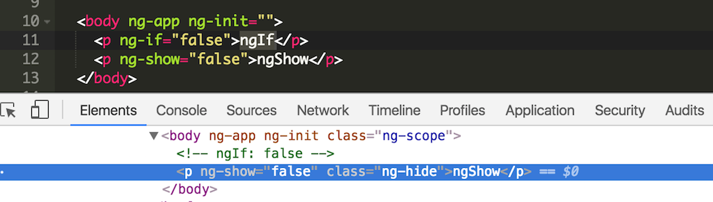

앵귤러를 처음 접한건 전문 개발자로서의 커리어를 시작한 순간부터였다. 웹 개발은 학교에서 APM 기반의 지식이 전부였고 간단한 텀프로젝트를 만들었던 수준이라서 '나는 웹 개발자 입니다' 라고 말하기 민망할 정도였다. 제이쿼리를 사용하긴 하지만 간단한 돔 조작을 하는 정도 수준이지 복잡한 이벤트를 다룬다거나 하는 그런 어려운 것은 대부분 인터넷에서 구하기 쉬운 라이브러리를 사용했다.
위플래닛에 입사하고 웹개발을 시작하기에 앞서 어떤 프레임웍을 선택하느냐가 네게 주어진 질문이었다. 그 당시 까지만 해도 제이쿼리가 모든 프론트엔드 개발자들의 주된 도구였고 BackboneJS 같은 MVC 패턴을 구현할 수 있는 프레임웍도 시중에 나와 있었다. 그러나 백본을 배워보고 싶은 이유는 없었는데 이유는 잘 모르겠다. 오히려 구글에서 이제 막 오픈한 앵귤러 프레임웍이 멋져보였고 이것으로 웹개발을 시작했다.
서점에 나온 앵귤러 입문서를 읽거나 관련된 블로그 포스팅을 보면서 앵귤러를 학습했다. 그러나 앵귤러 공식 사이트에 있는 개발자 가이드라인을 일독한 것은 이번이 처음이었다. 사실 하나의 프레임웍을 공부하려면 해당 사이트에서 제공하는 문서를 보는 것이 첩경일텐데 그렇게 하질 못했다. 글을 읽으면서 그동안 간과했던 부분들을 발견했고 간단히 정리해 보고자 한다.
ngBind를 고려해 보자
가끔 누군가에게 앵귤러로 헬로월드를 가르치다보면 인터폴레이션 문자열이 순간적으로 나오는데 왜 그러냐는 질문을 받는다. 그리고 어떻게 해결해야 하는지 궁금해 한다. 인터폴레이션 문법을 사용했던 손쉽게 타이핑할 수 있기 때문이었다. 사실은 인터폴레이션을 사용한 곳의 모든 코드를 ngBind 디렉티브로 변경해서 사용한다. 그러면 스콥 변수에 데이터가 할당될 때까지는 빈 문자열이 출력 되기 때문이다.
<p>Hello </p>
<p>Hello <span ng-bind="name"></span></p>
One Time Binding (::)을 사용하자
그럼에도 불구하고 인터폴레이션을 사용해야 할때는 원타임바인딩(One time binding)을 사용하는 것을 고려해 볼 수 있다. 일단 그냥 바인딩 하게되면 스콥 변수의 변화에 따라 뷰에 출력되는 값이 달라진다. 이것은 스콥에서 그 바인딩된 변수를 감시(watch)하고 있기 때문인데 바인딩된 변수가 많을수록 감시해야 할 것은 많아지고 브라우져는 메모리를 더 많이 사용하게 된다.
한편 원타임바인딩을 사용하게 되면 스콥변수에 할당된 초기값만 뷰에 출력된다. 이후 그 변수의 값이 변경 되더라도 뷰는 업데이트되지 않는다. 이것은 스콥 변수가 바인딩된 변수를 감시하지 않기 때문이며 그만큼 메모리를 절약할 수 있다.
<p>Normal binding: <b>Hello </b></p>
<p>One time binding: <b>Hello </b></p>
폼을 사용할 때는 ngForm을 사용하자
앵귤러폼을 사용하게 되면 좋은 점이 한 두 가지가 아니다. 폼은 사용자 입력을 받는 것이 첫번째 목적이다. 사용자는 폼에 입력해야할 값을 잘 모른다. 무슨말이냐 하면 전화번호 입력란에 숫자만 입력하는 것인지, 하이픈 기호(-)를 넣어도 되는지, 혹은 국가번호도 넣어야 하는지 잘 모른다는 말이다. 따라서 개발자는 사용자 입력에 대해 입력값 검증을 수행해야 하는데 제이쿼리로 이것을 일일이 검증하는 것은 상당히 수고로운 작업이다. 나도 초기에는 앵귤러 폼을 사용하지 않고 컨트롤러 함수에서 폼 입력값에 대한 검증 코드를 일일이 작성했었다. 만약 앵귤러폼을 사용한다면 선언적인 방법으로 폼 검증 로직을 추가할 수 있다.
<form name=“myFrom” ng-submit=“submit()”>
<input type=“text” name="username" ng-model="username" ng-minlength=“2” ng-maxlength=“20” ng-trim=“true” required/>
<input type=“password” name="password" ng-model="password" minlength=“6” required />
<button type=“submit”></button>
</form>
사용자 이름(username)은 길이 2에서 20 사이인 문자열로 제한할 수 있다. 또한 입칸 입력을 막기위해 trim 함수를 수행한다. 비밀번호(password)는 6자리 이상으로 입력하도록 제한한다. 마지막으로 두 필드는 반드시 입력한 뒤 제출(submit)하도록 제한한다.
만약 이러한 검증을 만족하지 못하면 앵귤러폼 로직에 따라 $scope.myForm.$invalid 플래그가 활성화 되어 폼 입력값이 잘못되었다는 것을 알 수 있다. 그리고 $scope.myForm.$errors 배열에 검증을 통과하지 못한 에러 정보가 담긴다. 각 입력 필드에는 "ng-invalid" 라는 CSS 클래스가 추가되는데 이 클래스를 재정의 함으로써 잘못 입력한 필드를 UI적으로 강조할 수 있다.
좀더 자세한 내용을 아래 링크를 확인해 보길 바란다.
디렉티브를 만들때는 독립 스코프를 만들자
리엑트의 컴포넌트와 비교할수 있는 것이 앵귤러의 디렉티브가 아닐까 생각한다. 하나의 독립된 HTML 컴포넌트로 만들수 있고 여러 곳에서 재사용해서 사용할수 있는 점 때문에 그렇다. 하지만 디렉티브를 만들때 부모 스콥을 사용한다면, 그러니깐 예를 들어 디렉티브를 사용하는 컨트롤러의 스코프 영향을 받는다면 온전히 독립된 디렉티브라 할 수 없다. 특정한 환경에서만 동작하는 디렉티브가 되어 버린다. 따라서 앵귤러 문서에서는 이렇게 사용하라고 권고한다.
Use the scope option to create isolate scopes when making components that you want to reuse throughout your app. 재사용하기 위한 컴포넌트를 만들때는 독립된 스코프를 만들기위해 스코프 옵션을 사용하세요.
디렉티브 사용법은 아래 링크를 더 읽어보기 바란다.
ngIf와 ngShow의 차이점
스콥 변수에 의존적인 뷰를 만들 경우 ngIf 디렉티브를 사용할 수 있다. 사용자 입력에 대해 폼검증을 했고 invalid 플래그가 true로 되었을 경우 에러 메세지를 출력하는 경우를 예로 들수 있겠다.
ngShow도 ngIf와 동일하게 사용할 수 있지만 ngShow는 비교문과 상관없이 무조건 돔을 생성한다는 것이 ngIf와 차이점이다. 대신에 class="ng-hide" 해당 돔에는 클래스가 추가되어 결과적으로 dispaly: none 스타일 속성이 추가되어 뷰에서 감춰지는 것이다. 반면 ngIf는 조건문 값이 참일 경우 아예 돔을 만들지 않고 주석문만 남겨진다.
아래 코드와 크롬 개발자 도구를 보면 이해할 수 있을 것이다.

의존성 주입(Dependency Injection)할 때 주의 사항
앵귤러에서 강조하는 것 중 하나가 의존성 주입, Dependency Indection이다. 말도 너무 어렵고 여전히 이게 어떻게 구동하는지 명확히 파악하지는 못하지만 이 개념 때문에 앵귤러에서 각 컴포넌트들을 독립적으로 모듈화 할 수 있고 테스트하기도 쉽다는 것은 알고 있다. 앵귤러에서 주입할 수 있는 것은 서비스다. 어떤 서비스인지 그 구현은 모르더라도 아래처럼 서비스를 주입하여 사용할 수 있다.
angular.module('myapp')
.controller('MyCtrl', function ($scope, myService) {
// myService를 사용할 수 있다.
});
myService를 myapp 모듈 범위 내 어디선가 정의해 놓고 MyCtrl이란 컨트롤러에서 이 서비스를 사용할 수 있는데 컨트롤러 정의할때 controller() 함수 두번째 파라매터의 함수의 파라매터로 넣는 방식이다. 이렇게 의존성 주입을 설정할 수는 있지만 문제는 다음과 같은 상황에서 발생한다.
프론트엔드에 자바스크립트 코드는 서버에서 브라우져로 다운로드 되어 실행되는 방식이다. 따라서 다운로드할 자비스크립트 코드의 용량이 작을수록 웹페이지를 접하는 사용자에게는 빠른 웹사이트처럼 느껴진다. 따라서 현대의 자바스크립트는 코드 용량을 줄이기 위해 변수명을 짧게 바꾸는 등 용량을 최소하려고 노력한다. 또한 상용화된 서비스의 코드가 다른 개발자에 의해 쉽게 읽혀지지 않도록 하기위한 난독화 작업을 수행한다. 위 코드를 압축하게된면 아마 이러한 코드로 변경될 것이다.
angular.module('myapp')
.controller('MyCtrl', function (a, b) {
});
반드시 그런것은 아니지만 변수만큼은 a, b처럼 짧게 변경된다. 왜냐하면 변수명은 개발자가 식별할수 있어야 하기 때문에 $scope, myService 였지만 브라우져가 볼 때는 a, b로 해도 상관없기 때문이다. 그러나 여기서 문제가 발생한다. 브라우져는 a가 $scope이고 b가 mySerivce 라는 것을 알지 못한다. 따라서 그러한 단서를 제공해야 하는데 Inline Array Annotaion으로 코드를 작성하면 된다.
angular.module('myapp')
.controller('MyCtrl', ['$scope', 'myService', function ($scope, myService) {
}]);
이것을 압축하면 아래와 같이 변경될 것이다.
angular.module('myapp')
.controller('MyCtrl', ['$scope', 'myService', function (a, b) {
}]);
문자열은 압축 대상이 아니기 때문에 배열에 넣은 '$scope', 'myService'는 그대로 남아있고 배열의 세 번째로 넣은 함수의 파라매터 변수만 a, b로 변경되었다. 앵귤러는 이를 근거로 a=$scope, b=myService라고 판단할 수 있는 것이다.
앵귤러 개발 초기에 이러한 문제로 고생을 많이 했다. 브라우져 콘솔은 뭐가 없다라고 하는데 잘 못찼겠고 그 땐 앵귤러가 너무나 멀게 느껴졌었다. 이런 앵귤러만의 특성을 파악하고 나면 좀 더 가까워지지 않을까 생각한다.
compile()과 link()의 차이점
디렉티브를 만들게 되면 아래와 같은 코드를 작성하게 될 것이다.
angular.module('myapp')
.directive('myDirective', function () {
return {
scope: {
name: '@'
},
template: '<div>Hello </div>',
link: function (scope) {
scope.name = 'Chris'
}
}
});
디렉티브의 스콥변수를 이용하기 위해 link 함수를 사용한다. 링크 함수를 사용하는 것에 대해 한 가지 생각해야 할 것이 있다. 링크함수는 디렉티브의 뷰와 모델을 연결하는 과정을 수행하기 위해 수시로 호출된다. 만약 link() 함수에서 작성하는 로직이 단순히 뷰에 데이터를 추가하는 것이라면 link() 함수 보다는 compile() 함수를 사용해야한다. compile() 함수는 디렉티브 생성시 한번만 호출 되기 때문이다. 아래는 컴파일 함수를 사용해서 동일한 로직을 구현한 코드다.
angular.module('myapp')
.directive('myDirective', function () {
return {
template: '<div>Hello <span></span></div>',
compile: function (element, attr) {
element.find('span').text(attr.name);
}
}
});
뷰에 독립적인 비즈니스로직은 서비스로 만들것
초반에 앵귤러로 코딩할 때 가장 많이 하는 실수 중 하나가 컨트롤러 함수에 모든 로직을 담는 것이다. 나중에 보면 컨트롤러가 어마무시하게 길어지고 '이렇게 하는게 맞나?'하는 의문이 든다. 그러한 의문은 합당하다. 앵귤러 프레임웍을 사용하는 것은 좀 더 유지보수 용이한 코드를 만들어 내는 것인데 하나의 파일이 그렇게 길어지면 유지보수가 힘들어지기 때문이다. 따라서 컨트롤러 코드 중 뷰와 독립적인 로직(비즈니스 로직)은 서비스로 분리해야한다. 그리고 분리된 서비스 로직이 재사용된다면 더 없이 앵귤러 프레임웍을 잘 활용하는 것이다.
아래 링크에서 컨트롤러와 서비스를 분리하는 예제를 살펴보기 바란다.
컨트롤러에서 돔을 조작하지 말것
컨트롤러 로직을 작성할 때 주의해야 할 점이 하나 더 있다. 제이쿼리 개발자가 흔히 저지르는 실수 중에 하나인데 컨트롤러에서 돔 조작 코드를 넣는 것이다. 앵귤러는 이렇게 개발하지 말라고 주의하는데 이 문서를 한번 읽어보자.
컨트롤러를 사용해야 하는 경우 는 이렇다.
Set up the initial state of the $scope object.
스코프의 상태를 초기화 할때 사용하는데 뷰에 노출할 값을 설정하는 것이다.
Add behavior to the $scope object.
예를 들어 뷰에서 사용자가 이벤트를 발생시키고 이벤트 핸들러 함수를 연결할 때 스코프에 할당하는 것을 말한다.
한편 컨트롤러에서 하지 말아야 할 것 에 대해서는 이렇게 얘기한다.
Manipulate DOM.
돔을 조작하지 말아야 한다. 돔 조작이 필요하면 디렉티브로 분리해서 거기서 돔 조작을 하거나 차라리 제이쿼리를 사용하는게 낫다.
Format input.
폼을 다룰 때는 위에서 언급한 ngForm 디렉티브를 사용해야 한다.
Filter output.
앵귤러는 필터를 위한 ngFilter 서비스가 별도로 있다.
Share code or state across controllers.
컨트롤러간의 데이터를 공유할 목적으로 emit, broadcast 함수를 너무 많이 사용하면 않된다. 로직이 복잡해진다. 그러한 공통의 로직은 서비스로 분리하여 개발해야 한다.
window.location 보다는 $location 서비스를 사용하자
제이쿼리로 프론트엔드 자바스크립트를 개발하다 보면 window 객체를 많이 사용한다. 만약 현 페이지 주소에 접근하기 위해서는 window.location 객체를 사용할 수 있다. 앵귤러에서는 이 윈도우 객체를 감싼 $location 서비스를 별도로 제공하는데 앵귤러를 사용한다면 이 서비스를 사용해야 한다. 앵귤러만의 라이프 사이클이 있기 때문이다. window.location과 $location 서비스의 차이를 확인해 보기 바란다.
이외에도 앵귤러에서는 기존 윈도우 함수의 몇몇 객체를 래핑하여 앵귤러 스타일로 제공하는 서비스들이 몇개 있는데 다음과 같다.
이러한 서비스를 사용하면 앵귤러 라이프사이클에 따른 로직을 구현할 수 있다. 예를 들어 window.location 객체를 이용해 웹페이지 주소를 변경할 경우 페이지 이동이 되지 않는 경우가 가끔 발생하는데 이것은 앵귤러 라이프사이클과 관련된 문제이다. $location 서비스를 이용해 주소를 변경하는 경우는 문제를 해결할 수 있다.
벌써 앵귤러 2 RC6 후보가 나왔고 매일 리엑트가 최고가를 찍고 있는 지금에 앵귤러 1 버전에 대한 글을 작성하는 것이 좀 무의미해 보이기도 하겠다. 하지만 누군가는 여전히 이러한 정보를 찾을수도 있지않을까? 나 스스로도 앵귤러 2로 넘어가기에 앞에서 한번 정리하는 시간이 필요했다.
출처: http://blog.jeonghwan.net/2016/08/20/angular-facts-easy-to-miss.html